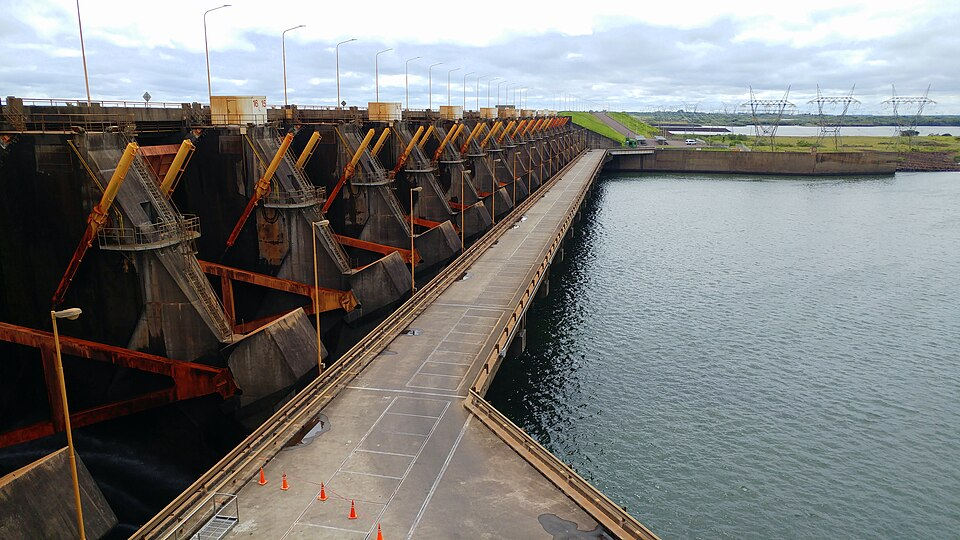

De la energía potencial del agua a la red; el caso de Yacyretá
Sobre el río Paraná, entre Ituzaingó y Ayolas, hay una obra de 65 kilómetros de presas [1]. Yacyretá no tiene el aspecto de una represa de montaña, con un paredón altísimo y un valle profundo. Es una central de llanura [2]: en lugar de mucha altura, aprovecha muchísima agua. Sus números permiten hacer, con una calculadora, el balance de energía de una central hidroeléctrica.
El principio es simple. El Servicio Geológico de Estados Unidos explica que una turbina hidráulica convierte la energía del agua en movimiento en energía mecánica, y un generador convierte esa energía mecánica en electricidad [3]. El agua represada tiene energía potencial; al bajar por la central, esa energía se entrega a los álabes de la turbina, como describe la ecuación de Euler.
La potencia disponible sale de una cuenta directa: cada segundo baja un caudal Q de agua desde una altura H.
La fórmula muestra que hay dos caminos para obtener la misma potencia: mucha altura con poca agua, o poca altura con mucha agua. Yacyretá toma el segundo.
Según la Entidad Binacional Yacyretá, la central tiene 20 turbinas tipo Kaplan, con forma de hélice de 5 álabes y un rodete de 9,5 metros de diámetro. Por cada una pasa un caudal de 800 metros cúbicos por segundo. Con el salto de diseño de 21,3 metros, cada unidad puede producir 155 MW, un total de 3100 MW [1].
Hagamos la cuenta. Para una turbina, ρ g Q H = 1000 × 9,8 × 800 × 21,3 ≈ 167 MW. Comparando con los 155 MW declarados, el rendimiento sale de alrededor del 93 % (un cálculo propio, sensible al redondeo de los datos). Es un valor muy alto.
Un río en la ducha: 800 metros cúbicos por segundo son 800 000 litros por segundo [1], y esto es por una sola de las 20 turbinas. Todas juntas tragarían unos 16 000 metros cúbicos por segundo (un cálculo propio), más que el caudal medio del Paraná en ese punto, de 12 000 m³/s [2].
Ese último dato es importante. Con el caudal medio y el mismo salto y rendimiento, la potencia sería de unos 2300 MW (un cálculo propio), no 3100. La EBY indica que esa potencia implicaría una energía anual de casi 21 000 GWh [1]. Si la central funcionara todo el año a 3100 MW, serían unos 27 000 GWh, así que esa producción equivale a un 77 % de la capacidad (un cálculo propio). La potencia instalada dice cuánto puede dar la central, no cuánto da: eso depende del río.
Cifras que no coinciden: la misma entidad da 3100 MW en unas páginas y 3200 MW en otra [2][4]. Una página dice que por cada turbina pasan 2630 millones de litros por hora [2], unos 730 m³/s, y otra, 800 m³/s [1]. Sus sitios no aclaran la diferencia; aquí usamos los valores de la ficha de diseño, que son coherentes entre sí.
El Departamento de Energía de Estados Unidos señala que las turbinas de reacción se usan en general en sitios de carga baja y caudal alto, y que las Kaplan, con palas y compuertas ajustables, tienen un rango de operación más amplio [5]. Encaja con un río de llanura: poco salto, mucha agua y un caudal que cambia.
La obra entera es más que una turbina. Los generadores trabajan a 13 200 voltios y los transformadores elevan esa tensión a 500 000 voltios para transportar la energía a los sistemas de Argentina y Paraguay [1]. Los dos vertederos pueden descargar juntos 95 000 m³/s, igual al pico de la crecida máxima probable del Paraná [1]. Por eso en un río grande el problema no es solo aprovechar el agua: también hay que dejarla pasar. Las seis presas de tierra y las estructuras de hormigón forman un embalse de 1600 km² [1].

Cortar un río tiene consecuencias. La central cuenta con cuatro ascensores para transferir peces desde aguas abajo hasta el embalse, para que puedan migrar, y el vertedero del brazo Añá Cuá mantiene un «caudal ecológico» para preservar la fauna [1]. Una esclusa, que funciona como un ascensor de barcos, permite a las embarcaciones salvar los 23 metros de desnivel creados por el embalse [1]. Cada uno de esos problemas tiene su propia hidráulica.
Una central hidroeléctrica convierte energía potencial en electricidad con una fórmula simple: P = η ρ g Q H. Yacyretá muestra el camino del caudal: un salto de solo 21 metros, pero 800 metros cúbicos por segundo por turbina. Las cuentas con sus datos dan un rendimiento cercano al 93 %, y muestran que la potencia instalada es un techo, no una promesa: quien manda es el río.
Pregunta para la comunidad: Si el nivel del embalse baja un metro, ¿la potencia cae solo por tener menos salto? Pensá qué pasa con el nivel de aguas abajo durante una crecida: ¿una creciente grande siempre ayuda a una central de llanura?